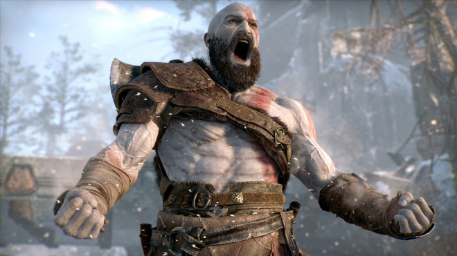
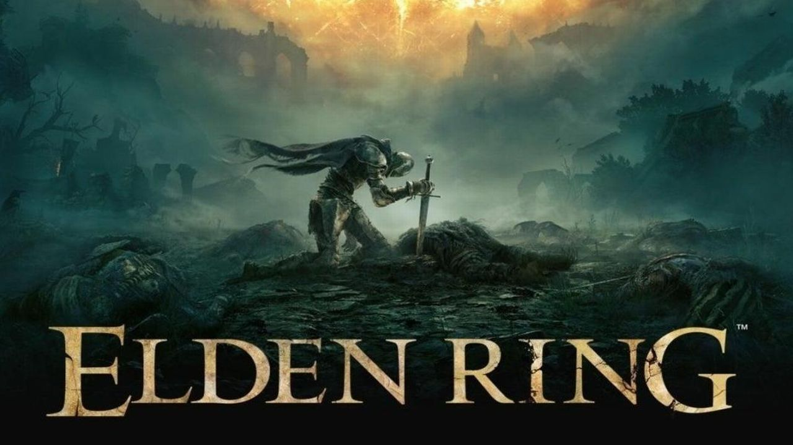

İskandinav mitolojisinde geçen oyun, Kratos ve oğlu Atreus'un ölen annesinin vasiyeti olan diyarların en yüksek yerinden küllerini dökme amacıyla çıktıkları maceraları anlatır.Oyunun ana karakteri Kratos'u Christopher Judge, oğlu Atreus'u Sunny Suljic seslendirmiştir. Yönetmeni Cory Barlog' tur. 6 Aralık 2018'de The Game Awards 2018 etkinliği kapsamında jürilerin oyu ile Yılın Oyunu seçilmiştir
Oyun, oyun yönetmeni Hidetaka Miyazaki ve fantezi yazarı George R. R. Martin'in ortak çalıştıkları bir projedir ve Microsoft Windows, PlayStation 4-5, Xbox One ve Steam Deck[1] platformlarında 24 Şubat 2022 tarihinde çıkış yapmıştır.
